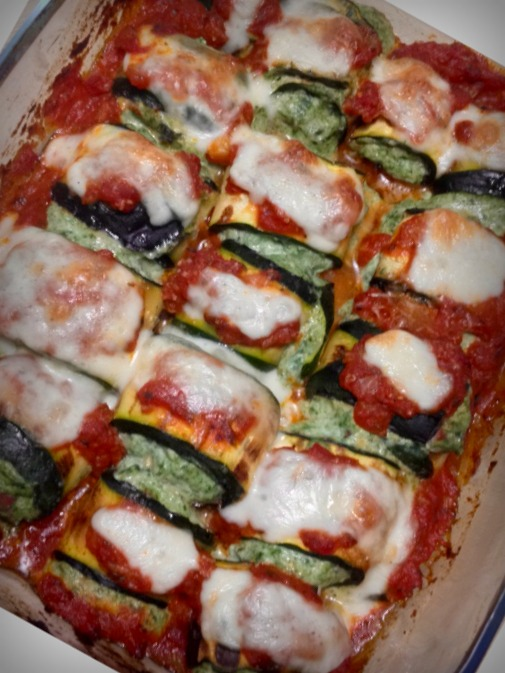
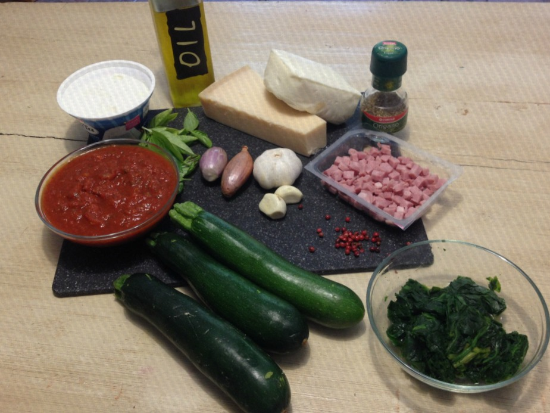
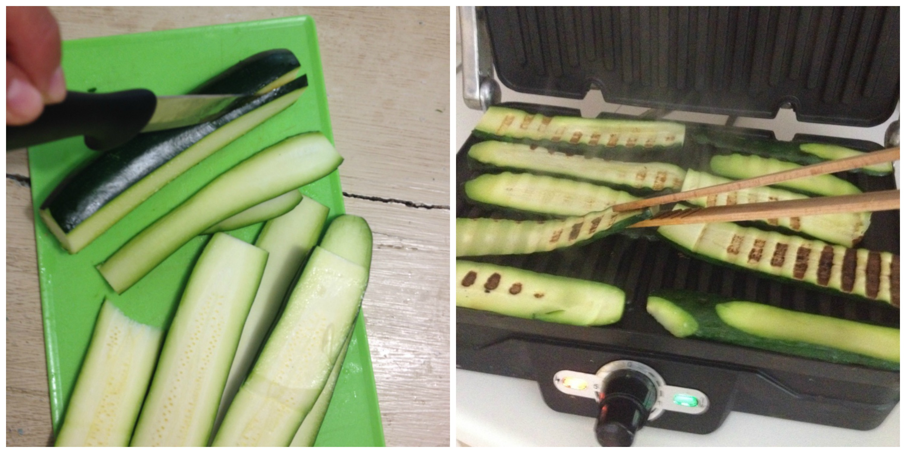
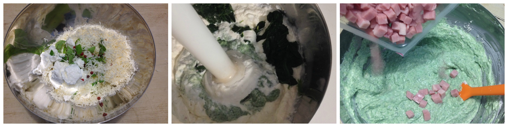
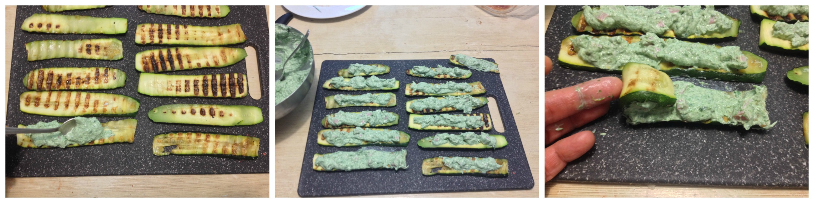
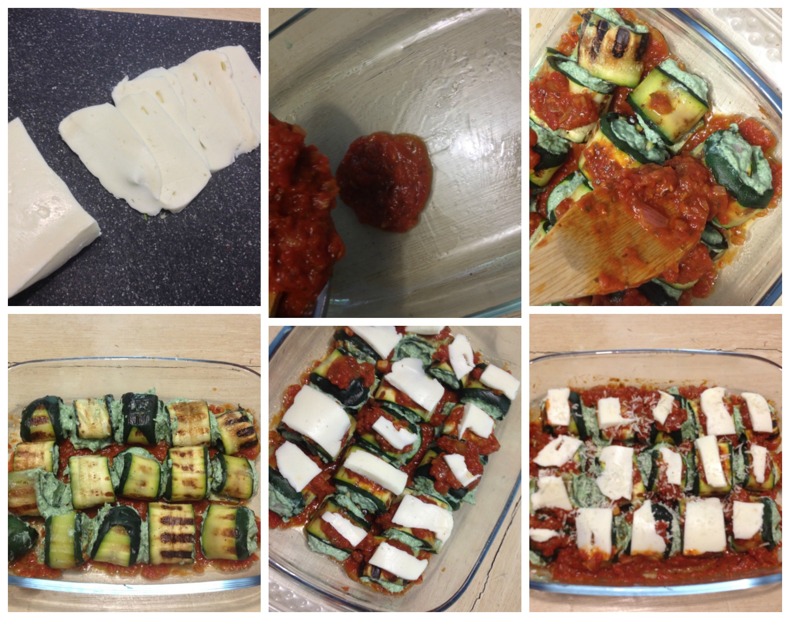

Low-carb zucchini cannelloni¶

Zucchini cannelloni
- Serves: 4
- Type: main
Background¶
Who doesn’t like Italian food?, I have to admit that I am not a such big fan of it (and this is why my citizenship might be revoked) but I like to eat some Italian food from time to time, especially because it is simple to cook, but since my partner and I are in a low carb diet, Italian food is kind of forbidden in this house. To avoid lack of Italian food, I found some alternatives online and to use grilled zucchini instead of pasta -for lasagna (I will upgrade the recipe soon), cannelloni- is a good idea and it is really healthy and you will not be there thinking about all the km you must to run to feel light again. I used less ricotta cheese that in some recipes you will find online, believe me, in this case less is better.
Ingredients¶
Ingredients
- 3 large zucchini
- 250 grams ricotta cheese
- 5 tablespoons parmesan cheese
- 1 teaspoon dry oregano
- 250 ml marinara sauce ( Tomato marinara sauce )
- 200 grams mozzarella for pizza
- 100 grams diced ham (prosciutto cotto) - optional
- olive oil
- red pepper flakes
- 100 grams cooked and drained spinach
Steps¶
Heat the electric grill or grill pan
Cut in thick slices the zucchini
Pour some olive oil into the grill and expand it
Place the sliced zucchini and grill for both sides being careful to do not burn them
Remove the excess of liquid with paper towel and set aside
Grill the zucchini
Prepare the ricotta filling adding the ricotta cheese, 3 tablespoons parmesan cheese, dry oregano, basil leaves, red pepper flakes and the spinach in a bowl and blend all the ingredients until smooth
Add the prosciutto dices
Refrigerate for 30-60 minutes
Preparing the ricotta filling
Assemble the zucchini cannelloni, add a tablespoon of the ricotta filling onto one side of the zucchini and spread it.
Roll up the zucchini been careful to do not break them
Rolling the zucchini cannelloni
Spread tomato marinara sauce in a ovenproof dish
Place the zucchini cannelloni seam side down above the marinara sauce
Add some tomato marinara sauce on the cannelloni, a small piece of mozzarella and sprinkle the remaining parmesan cheese
Preparing to bake
Bake in a pre-heated oven (180°C) for 20-25 minutes or until the cheese is melted and golden.